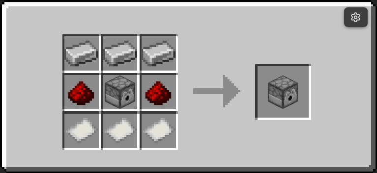

Storage¶
The ra_storage module adds Boxer, Unboxer, and Item Crate workflows for compact inventory transport.
- Namespace:
ra_storage - Give all:
/function ra_storage:items/give_all - Give crate only:
/function ra_storage:items/give_storage_box - Runtime architecture: How It Works
Block Summary¶
| Block | Item model | Recipe | Default I/O |
|---|---|---|---|
| Boxer | minecraft:dropper |
 |
input1="^ ^ ^-1", output1="^ ^ ^1" |
| Unboxer | minecraft:dispenser |
 |
input1="~ ~ ~", output1="^ ^ ^1" |
Item Crates¶
Item Crates are storage items (storage_box.json) and can also be given directly.
They are made when you power a boxer block. And are emptied when you power an unboxer
- Base item:
minecraft:player_headwith profileBoxMan01234 - Stack size:
64 - Storage payload keys:
components.minecraft:custom_data.ra.storage_box.itemscomponents.minecraft:custom_data.ra.storage_box.preview- Marker key for modern crates:
components.minecraft:custom_data.ra.item_box - Lore displays the first five preview lines; if more exist, lore appends
... and more
Two-Minute Setup¶
- Place a Boxer and point its front toward an output container.
- Put the source container behind the Boxer (default
input1) and ensure output has free space. - Power the Boxer. It packs the full input container into one Item Crate and inserts that crate into
output1. - Place an Unboxer facing an output container.
- Put one or more Item Crates into the Unboxer inventory.
- Power the Unboxer. It forwards one stored stack at a time from each crate into
output1.
Runtime Behavior¶
Boxer¶
- Uses redstone power detection and runs only while powered.
- Requires both
input1andoutput1to be valid#ra_lib:containers. - Copies the full
Itemslist frominput1into one Item Crate (ra.storage_box.items). - Builds a preview list and refreshes crate lore.
- Inserts the generated crate into
output1using shared item-mover capacity checks. - Clears input container contents only after successful insertion.
- Enforces a hopper-like minimum 4 tick cooldown between successful operations.
Unboxer¶
- Uses redstone power detection and runs only while powered.
- Selects one candidate item from
input1(including partner chest handling when applicable). - Accepts both modern crates (
ra.item_box) and legacy crates (ra.storage_box_item). - Moves the first stored stack from the crate into
output1. - Supports partial insertion: only the inserted amount is removed from the stored stack.
- Rebuilds crate preview and lore after each extraction.
- Enforces a hopper-like minimum 4 tick cooldown between successful operations.
Command Quick Reference¶
| Command | Purpose |
|---|---|
/function ra_storage:items/give_all |
Give Boxer, Unboxer, and Item Crate |
/function ra_storage:items/give_storage_box |
Give one empty Item Crate |
/function ra:items/bundles/give_storage_bundle |
Give a prefilled storage bundle |
Troubleshooting¶
- Boxer does nothing: verify it is powered and both
input1/output1point to valid containers. - Boxer does not clear input: output likely cannot accept another item (full container).
- Unboxer does nothing: ensure the selected input item is an Item Crate with at least one stored stack.
- Unboxer stalls intermittently: check output capacity; partial insertion can leave a reduced first stack in the crate.
Contributor Notes¶
- Keep modern (
ra.item_box) and legacy (ra.storage_box_item) crate compatibility paths intact. - Preserve partial-insert semantics in unboxing (
#mover_insertedamount consumption). - If lore or preview format changes, update both
update_loreandupdate_lore_storage_target.